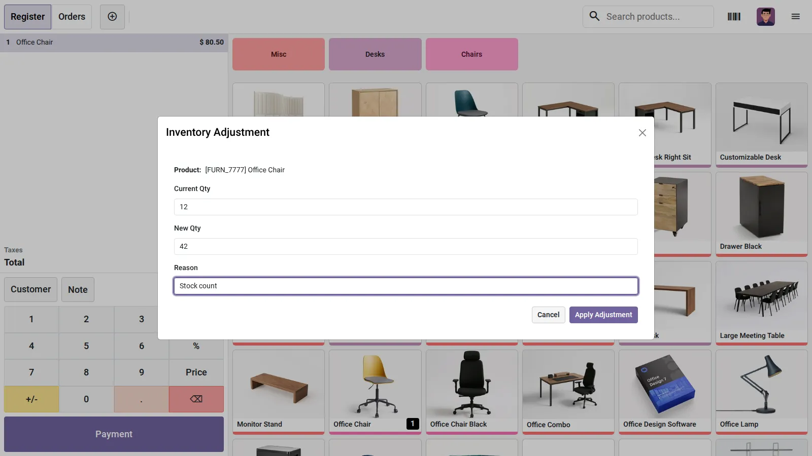

POS Inventory Adjustment
Quick stock adjustment directly from the POS interface
- Price
- $19
- Odoo versions
- 16.0
- 17.0
- 18.0
- 19.0
- 20.0
- Technical name
tamadoo_pos_inventory_adjustment- License
- OPL-1
Odoo 20.0: not listed on the store yet. Ask at tama.odoo@gmail.com.

Text and screenshots below are from the Odoo 20.0 version of this module.
Adjust product stock directly from the POS.
What it does
Select a product line and tap Adjust Stock in the Actions menu to set its on-hand quantity with a reason — no need to leave the POS for quick stock counts, damage or spoilage.
Key features
- Adjust on-hand quantity from the POS in a quick dialog.
- Shows the current quantity in the stock location of the register's own warehouse and sets the new one there.
- The reason is saved as the reference of the adjustment, visible in Inventory → Reporting → Moves History.
- Applies a real inventory adjustment (stock.quant).
How it looks

Step by step
1. Select the product line
In the POS, add the product to the order or tap its line.
2. Open the adjustment
Then tap the ⋮ button next to the control buttons to open Actions, then tap Adjust Stock. The button is shown to users with the Inventory / User access right; other cashiers do not see it.
3. Enter the counted quantity
The dialog shows the Current Qty in the stock location of this register's warehouse. Enter the New Qty and a Reason, for example stock count or damage.

4. Apply
Tap Apply Adjustment. The on-hand quantity is corrected in Inventory right away and a message confirms the new stock.
To review it later, open Inventory → Reporting → Moves History: the reason is the Reference of the move, next to the location. The optional column Done By shows who applied it. Products tracked by lot or serial number are not adjusted from the POS; use the Inventory app for them.
Requirements
- Odoo 20 — Point of Sale + Inventory (
pos_stock).
Tamadoo · tama.odoo@gmail.com
Get POS Inventory Adjustment
Odoo 20.0: not listed on the store yet. Ask at tama.odoo@gmail.com.
Questions before buying? Write to tama.odoo@gmail.com.